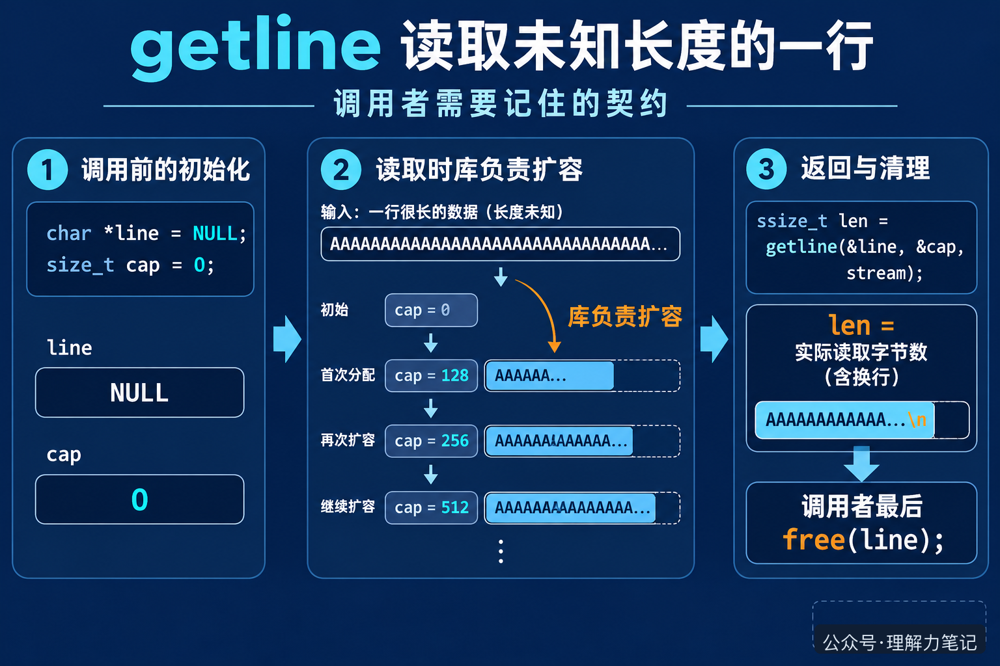

fgets 需要调用者先准备一个固定大小的字符数组。数组太小，一行就会被拆成几段；数组开得很大，又只能靠猜。配置文件、日志和用户输入的长度往往事先不知道，这个猜测很容易变成边界 bug。
POSIX 提供了 getline。它会在缓冲区不够时扩大缓冲区，把这一行放进去，再把实际读取的字节数返回给调用者。代码因此可以从“我应该分配多大的数组”转向“这一行实际有多长”。
先记住一句话：
getline成功时返回读到的字节数，换行符算在里面，结尾的\0不算；读到文件末尾且没有读到任何字节，或发生错误时，返回-1。
这篇文章的实验运行在 macOS 14.8.8、Apple clang 16.0.0，未在 Linux 主机实测。getline 是 POSIX 接口，不属于 ISO C 标准；需要在只承诺 ISO C 的环境中移植时，不能默认它一定存在。
这篇文章怎么读？先看一段完整实验，再把 line、cap 和返回值对上，最后看循环结束后为什么还要 free(line)。
最常见的初始化方式只有两行：
然后把它们的地址交给 getline：
这里有三个角色。line 指向存放字符的缓冲区，cap 记录这块缓冲区当前有多大，len 接收本次实际读了多少字节。
第一次调用时，line 是空指针，cap 是 0。库会分配一块能用的空间，把地址写回 line，并把空间大小写回 cap。如果下一行更长，库会用类似 realloc 的方式扩容，必要时更新 line，再继续读取。把 line 和 cap 保留在循环外，后面的调用就能复用已经分配的空间。
这像搬家时准备一个可以加长的箱子：箱子不够大时由搬家公司换成更大的箱子，箱子的地址可能变了，所以搬家公司要把新地址交还给你。你只需要一直使用最新的 line，不要保存旧指针。
这个类比只用来说明“空间会变大，地址可能变化”。真实程序中，内存仍然由 malloc、realloc 和 free 的规则管理，不能把 line 当成永远不变的数组名。

把 getline 的返回值直接当作字符串长度，容易漏掉两个细节。
第一，成功返回的是本次写入的字节数，包含换行符，但不包含最后自动补上的 \0。例如输入 short\n，返回值是 6，line 中的内容是 short\n\0。如果最后一行没有换行符，返回值就只统计实际字符。
第二，失败或“已经到文件末尾且没有读到字节”时，返回 -1。所以返回值不能放进 size_t 再和 -1 比较，应该使用能够表示负数的 ssize_t。这也是示例里同时包含 <sys/types.h> 的原因。
有了返回值，程序不必再调用 strlen(line) 猜长度。它还能分辨输入中的空字符：strlen 会把第一个 \0 当成字符串结尾，而 getline 返回的是从流中实际读出的字节数。
下面的程序只打印观察结果，不把整行重新打印一遍。cap 用来观察缓冲区是否扩大，newline 用来判断本次读取是否拿到了换行符。
输入三行，第二行故意写得更长，最后一行不加换行符：
程序输出：
第一行读完后，这次运行显示的缓冲区容量是 8。第二行需要更多空间，容量扩大到 64。第三行继续使用这块空间，所以容量没有缩回去。cap 的具体数值由实现决定，程序不能把 8 或 64 当成接口承诺。len=4 说明最后一行有 4 个字符，newline=0 说明输入中没有换行符。循环下一次调用时返回 -1，此时 feof(stdin) 为真。
getline 负责分配和扩大缓冲区，调用者负责释放。无论循环是因为 EOF 结束，还是因为发生错误结束，只要 line 曾经由 getline 分配过，最后都应该执行：
即使一次字节也没读到，某些实现也可能已经分配了缓冲区，所以不要只在“成功读到至少一行”时释放。示例把 free(line) 放在每个提前返回的错误路径和正常结束路径上，就是为了让所有出口都遵守同一个所有权规则。
如果需要保存一行到下一次循环之后，应该复制它的内容，而不是把 line 指针交给长期数据结构。下一次 getline 可能复用并改写这块内存，扩容时还可能让指针失效。
getline 解决的是“行有多长”的问题，不会替你决定这一行是否符合业务格式，也不会替你去掉换行符。读到完整一行后，是否删除 \n、是否限制最大长度，仍然是调用者的选择。
getline 的缓冲区使用方式和返回值说明。本文为公众号「理解力笔记」原创。转载请联系作者，并保留出处。